前言
台灣百岳最高峰“玉山主峰”3952公尺，以及百岳最低峰“鹿山”2981公尺，而玉山群峰總共有九座台灣百岳，不只玉山主峰可單攻，後來衍生 “單攻玉山前五”：[玉山前峰/西峰/北峰/主峰/東峰]及“單攻玉山後四”：[南玉山/玉山南峰/東小南山/鹿山]，2022年又有大神完成二十四小時內完成九座玉山群峰[陳家文] [哈利Harry]，自己有幸跟他們一起走，爬玉山群峰過程，有高有低，當爬到鹿山百岳最低點時，尤如人生來到低潮，不管怎樣都還是得爬回去，不可放棄的回到叉路，然而就是這永不放棄才能持續前進，才能再登玉山主峰，再創人生巔峰。
如何申請規劃
想爬玉山，最難的不是體力夠不夠或有沒有時間，而是抽不抽的中，因為不管是平日或假日，總是一堆人申請想去圓夢，因此申請不單單要靠運氣，而且還要努力。
玉山國家申請網站選項只有如下三種，需選擇[塔塔加 - 玉山線 - 塔塔加]，但不管如何首先要取得名額，其次再修改行程增加玉山群峰其它座， 最後國家公園會根據申請人的計劃審查通過。
| 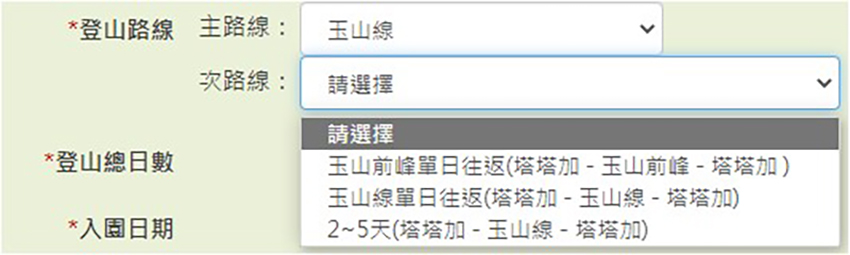 |
- 取得名額：
a. 可在一個月前進行大抽籤名額限制60名，不少人連續抽假日抽了1，2年都還不一定抽的中，完全看運氣，可由國家公園官網知道抽籤日
期以及是否有中籤。
b. 申請補位排隊，抽籤當天公佈後，再馬上重新送申請補位，當中籤隊伍有人取消時，會以重送申請順序遞補。
- 修改行程： 取得名額後再由“臺灣國家公園入園入山線上服務網”>>“資料線上異動/取消入園”去修改，重點在於計劃何時抵達“排雲
山莊” “各山頭登頂時間”，玉山國家公園會根據申請者時間發e-mail通知，最終取得修改後入園證。
風險管理
單攻玉山有人會想上去看日出/日落，或者想去挑戰自我能耐，幾乎都會碰到摸黑問題，因此有些山頭不太適合摸黑前往，如下：
- 玉山東峰3869公尺，一般登山客會先從玉山主峰然後再前往東峰，或者由圓峰山屋走玉山南稜線上去，但這二條路線山體岩壁崢嶸，巍峨
險要，還是要天亮走比較安全，而且白天走可以欣賞到玉山主體雄偉，以及體驗稜線的刺激，前往玉山東峰的路線上，常刮大風起霧，所
以不只要好天氣，更要避開摸黑。
- 南玉山3383公尺，傳統路線是圓峰山屋過去，大約3730公尺有個往南玉山的叉路牌，然後上到3750公尺後，抖切250公尺，之後沿著箭竹
草坡3500~3300公尺走很長一段，重點是剛開始下切不只抖，還要橫渡，這段摸黑走是風險極高的，而另一條探勘路線從楠溪林道走南玉
山西北稜線，更不太可能摸黑走。
安全考量上述二座，目前覺得玉山群峰最佳走法的順序：
東小南山 >> 鹿山>> 南峰>> 南玉山>> 東峰>> 主峰>> 北峰>> 西峰>> 前峰
但是申請入園時會被要求每座的時間點，如果超出預計時間晚到，國家公園志工有權不讓隊伍前往，因此，第一次走把西峰拉到第一座，或者把前峰拉到最前面走完，回程才不用再抖上。
| 玉山群峰合法申請入園證會在行程補充說明計劃山頭時間點 | ||
| 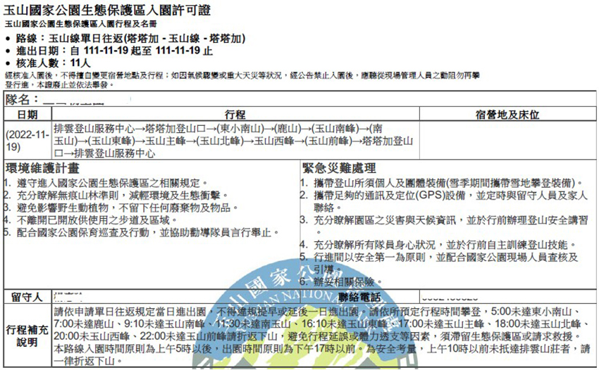 | ||
正常會把後四峰先走完，不管是留南玉山或鹿山最後，都會有想放棄的念頭，加上如果天氣因素或身體因素，還可以在體力還未耗盡及天色還早時撤退，因玉山群峰幾乎都要走來回，除了“東小南山>>鹿山>>南峰”跟“圓峰山屋>>玉東叉路 (玉山南稜線)>>東峰/主峰”可以順路過去不走回頭路，所以必需好好規劃，建議可先分段完成 玉山前五峰，玉山後四峰，最終路線都走過後再來挑戰玉山群峰。
玉山群峰2015/05/13 ~ 05/17
說起這次行程還算蠻幸運的，前一週海上颱風警報，把申請山屋的山友都趕下山，後來全員11位(含領隊/壓後) 3天都住圓峰山屋，第四天沒營地也沒山屋，後來迫降在5K西峰下景觀台，基本上要連續抽中營地跟山屋都很難，尤其這樣多人數，重點是九座第一次爬就可以打包，當時登山菜鳥的我，心情超激動，所以山神廟，玉山北北峰3833公尺，玉山小南山3582公尺，但當時還不會看軌跡不然玉山圓峰3752公尺應該也會跑去。
Day-1： (玉山西峰3518公尺 山神廟)
前一天晚上八點坐車下台中朝馬站>>住於大台中登山隊>>早上9：15玉山登山口出發 >>下午1：48到排雲山莊>>下重裝前往玉山西峰2：18>>輕裝3：26到玉山西峰>>3：30到山神廟 >>重裝前往圓峰山屋>>下午5：08到玉山主峰/排雲/圓峰三叉路口>>下午5：54到圓峰山屋。
| 領隊出發前幫大家合照 |
| 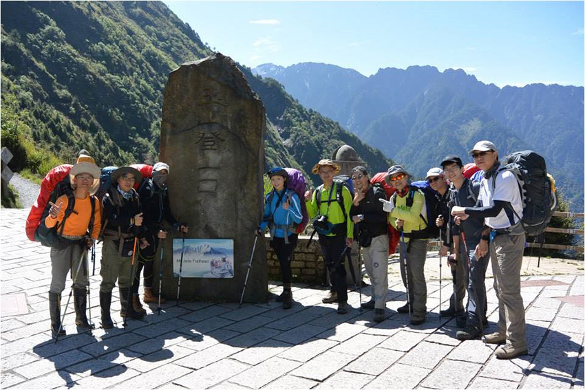 |
Day-2： (玉山南峰3884公尺 東小南山3744公尺 鹿山2981公尺)
早上5：00出發>>5：32玉山南峰(第二百岳)>>5：50前往東小南山>>6：53到東小南山(第三百岳) 7：20前往鹿山>>11：02到鹿山(第四百岳)>>4：48回到圓峰山屋
| 登頂南峰 | ||
| 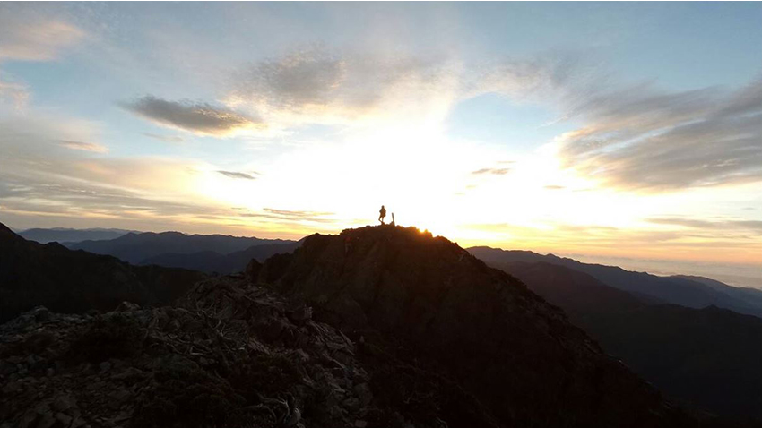 | ||
| 遙指北峰 | ||
| 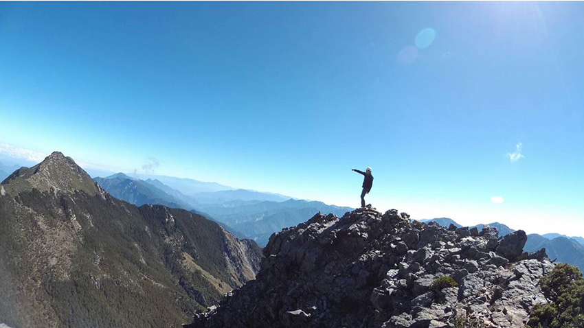 | ||
Day-3： (玉山東峰3869公尺 玉山主峰3952公尺 玉山北峰3858公尺 北北峰3833公尺)
5：15圓峰山屋出發>>8：49到東峰(第五百岳)>>9：30前進主峰>>不到11點上玉山主峰(第六百岳) >>12：37前往北峰>>下午1：25到北峰(第七百岳)>>來回北北峰大約20分1：45回北峰 >>下午2：30出發回程>>3：30上到碎石坡>>4：48回到圓峰山屋
| 玉山南稜線上主東叉路 | ||
| 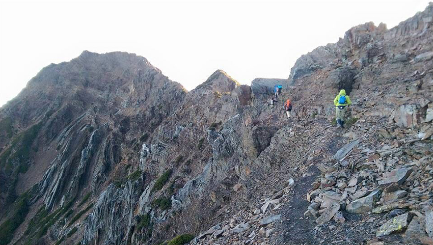 | ||
| 鳯尾岩海拔3872公尺介於主峰與東峰之間稜線最高突起岩塔 | ||
| 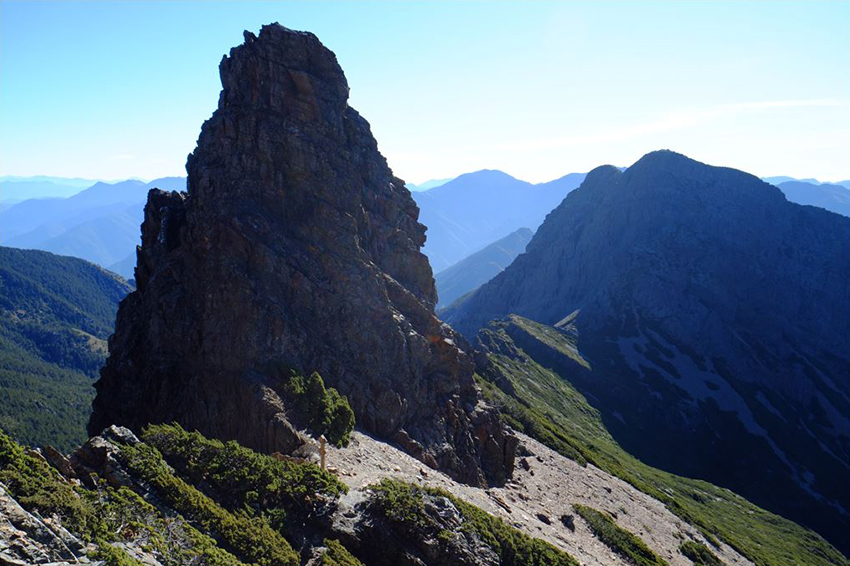 | ||
Day-4 ： (小南山3582公尺 南玉山3383公尺)
5：10圓峰山屋出發>>8：15小南山>>8：55南玉山(第八百岳)>>9：50回程>>11：00再上小南山 >>下午1點回到圓峰山屋>>整裝重裝下山到5K處觀景台>>6點前到
| 前往南玉山方向抖切250公尺 | ||
| 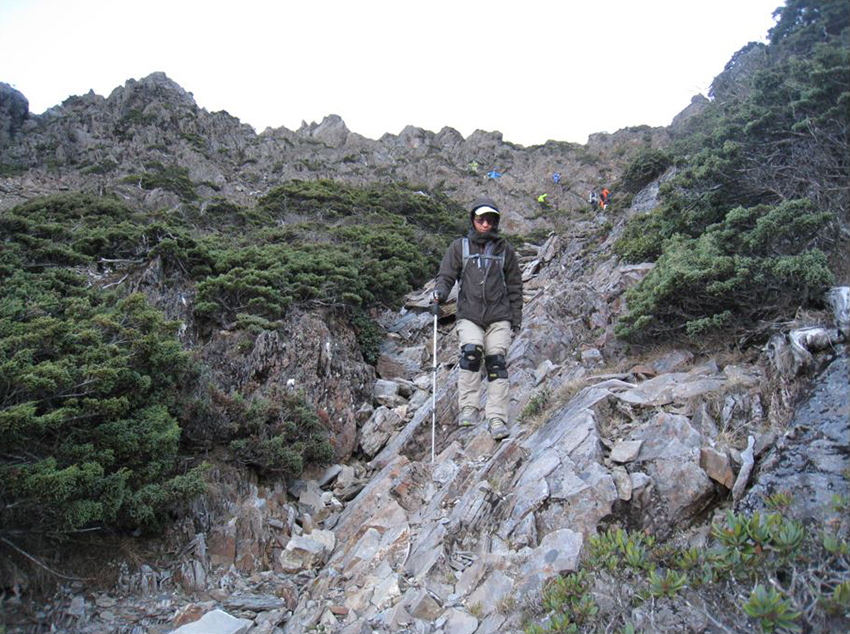 | ||
| 跟隊友再上小南山 | ||
| 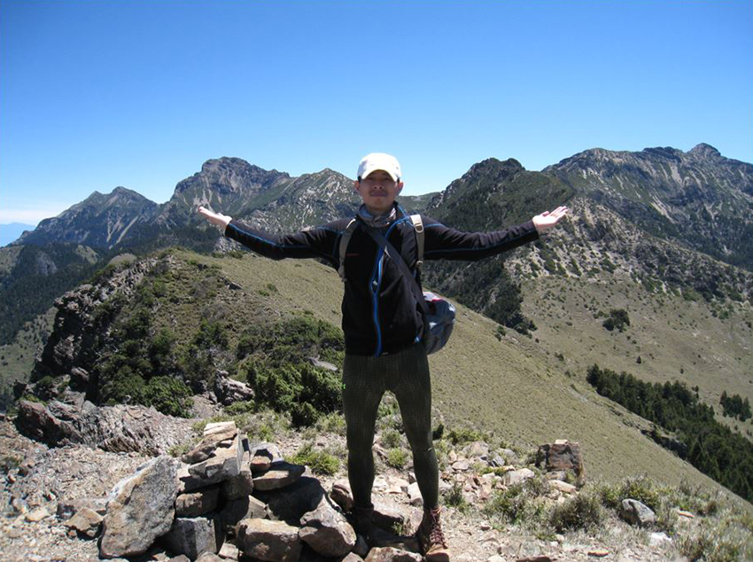 | ||
Day-5：
5：00 5K處觀景台出發>>5：48到玉山前峰登山口>>6：17分到玉山前峰(第九百岳)>>7：45下山>>8：00到玉山前峰登山口>>八點多出發>>9：37出玉山登山口
| 玉山前峰及下山石瀑 | ||
| 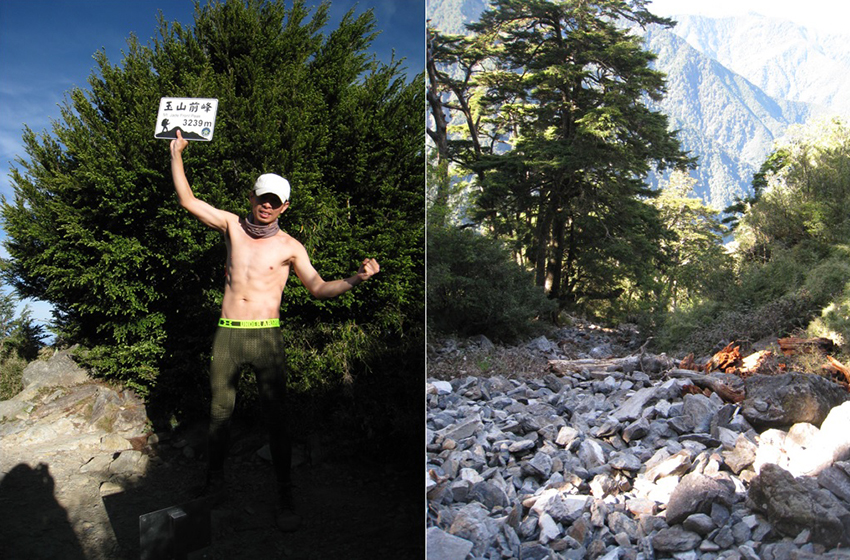 | ||
多天數的規劃重點，因為第一天就要趕到圓峰山屋，可安排先撿“西峰”，而第二天登山客或初學者一定要安排順序“南峰”>>“東小南山”>>“鹿山”因為回程完全會累到想放棄，只想回山屋或營地休息，第三天只安排 “南玉山”再順撿“小南山”，完成後四峰優先，第四天需走玉山南稜線上主東叉路 “東峰”>>“主峰”>>“北峰”，時間有餘“北北峰”也不要放過，最後一天補上“前峰”。
單攻玉山群峰出發前評估
- 天氣因素： 通常在出發前一週會持續觀查天氣鋒面狀況，只要有下雨的機會就會自行取消2022年10月8，9，10，22號以及11月6號，總共取消了五次，都是天氣不佳，主要長距離又碰到下雨根本很難完成，所以別浪費時間去挑戰天氣。
- 隊員挑選： 你沒把握，隊友也沒把握，但絕對要找能獨自夜爬，會看GPX軌跡的同伴，因為現實是很殘酷的，千萬別說隊友等我一下，合理的配速下跟不上，只能祝福目送，一但出發碼表按下去，想要完成24小時內走九座，基本上你就是自己要具備所有能力。 如果可以先行個別完成 “玉山前五峰”及 “玉山後四峰”。
- 水源補給： 單攻超過20小時不太可能把飲用水都帶上，所以玉山較為穩定有水源可補給的地方 “排雲山莊”，“圓峰山屋”，如果不是旱季“往南玉山剛下切下來的岩壁”以及 “東小南山往鹿山的路線上”會有活水源，因此可以加入行走順序性的考慮。
2022/10/30第一次玉山群峰挑戰未果 (西峰+玉山後四+主峰)
第一次爬玉山事隔七年後再次回來親近它，雖然已不是當年只會跟著走的爬山小菜鳥，但還是碰到一些問題如下：
- 規劃不周詳： 此次山頭登頂順序 西峰>> 南玉山>> 東小南山>> 鹿山>> 南峰>> 東峰>> 主峰>> 北峰>> 前峰，當西峰走完抵達叉路，
要走南玉山時天還是暗的，所以硬著頭皮走下去，主要是當下考慮如果回排雲山莊太晚會被攔截前往西峰，如果有這考量，當下應該把前
峰/西峰都先完成，因考慮太久沒走鹿山，所以選擇摸黑走南玉山。
- 亂切捷徑： 捉到常走探勘路線登山客的軌跡，鹿山回來直接走稜線上南峰，從軌跡看起來很直很近，實際走下去墜落暴露感很強大，加上
天氣起霧，直覺告訴我往回下切到原路回到途中水源地緩和一下心情，同隊隊友因為只走後四留南玉山最後，在天氣好的情況下硬切了過
去，事後說到從東壁上南峰危險又耗時。
- 天氣預報不佳還出發： 峰面到來預計晚上八點多會下雨，當走到主東叉路時要下切往東峰方向，被強風及霧籠罩，下切一小段後猛然出現
撤退念頭，因為當下手已經冰冷馬上又切回來往主峰方向開始下山。
行程軌跡
實際時間與現實預估的差異分析
| 六座登頂證明 | ||
| 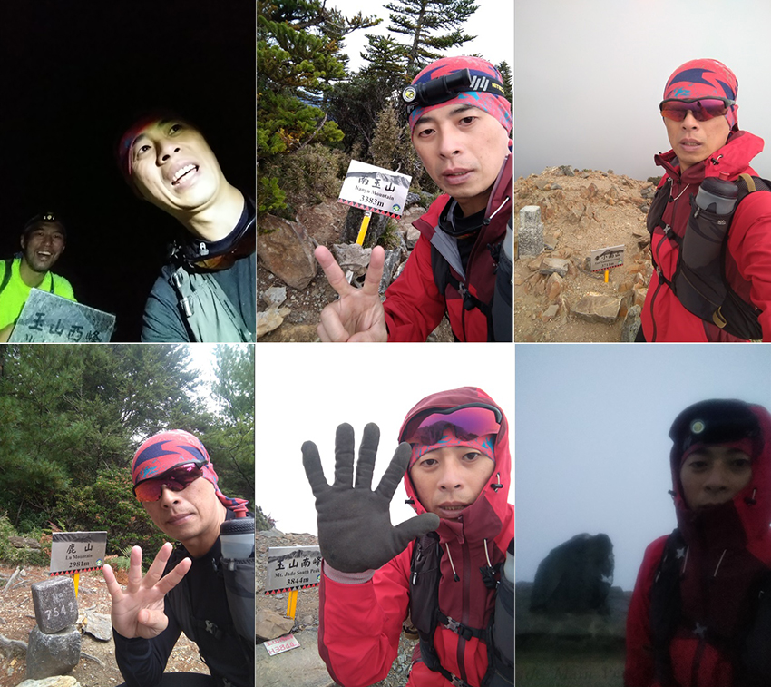 | ||
總時間：20小時02分/45。52公里/海拔+3704。1公尺/海拔-3695。7公尺
(玉山登山口開始/結束時間：19小時29分)
00：08 刷身份證登入
00：31 玉山登山口
02：26 排雲山莊
03：02 玉山西峰 3158公尺（第一座）
03：31 返回排雲山莊
04：19 圓峰山屋
04：35 南玉山叉路
06：24 南玉山 3383公尺（第二座）
08：40 回南玉山叉路
09：06 東小南山/鹿山叉路
09：27 東小南山 3711公尺（第三座）
11：30 鹿山 2981公尺（第四座）
15：16 玉山南峰 3844公尺（第五座）
16：00 回圓峰山屋
17：30 玉山 3952公尺（第六座）
20：10 玉山登山口
2022/11/19第二次玉山群峰 (26小時)
有了第一次經驗後重新規劃行程，大目標還是後四峰先走，因此山頭安排順序：東小南山>> 鹿山>> 南峰>> 南玉山>> 東峰>> 主峰>> 北峰>> 西峰>> 前峰
這樣就可以避開南玉山及東峰摸黑，但還是有一些經驗分享：
- 此次迷途點：
 剛開始去鹿山途中，切太快往下，路段需要判斷路跡，要一直靠左路線。
剛開始去鹿山途中，切太快往下，路段需要判斷路跡，要一直靠左路線。
 前峰夜爬，路徑不熟，憑借2015年走過的經驗，靠右行進化解。
前峰夜爬，路徑不熟，憑借2015年走過的經驗，靠右行進化解。
- 體力下降：玉山後四峰完成後，每加一座都是體能及耐力的考驗，當東峰返回主峰時就很明顯，因為接下來就是準備摸黑行程北峰，西峰，前峰每座都有想放棄的念頭，需自我心裡建設。
- 北峰返回：去程下坡可以走在中間路徑，回程要爬回來需要靠拉鐵鍊慢慢回到主北叉路。
- 前往西峰：可在排雲前水塔先行休息補水，低調避免碰到志工或莊主的檢查，返回時也切勿停留，直接下山。
- 最後一座前峰：林道下坡可小跑，但會一直懷疑是不是錯過前峰登山口，木樁指示牌是2。7K到塔塔加鞍部，但路標牌過2。5K還沒到，因為有反光牌，所以不用擔心會錯過，最後的考驗距離800公尺爬升約600公尺，到石瀑區靠左前進。
行程軌跡
總時間：26小時32分/55。18公里/ 海拔+4598公尺/ 海拔-4495公尺
(玉山登山口開始/結束時間：26小時09分)
00：02 塔塔加遊客中心刷卡
00：25 玉山登山口
02：30 排雲山莊
03：17 圓峰山屋
04：12 東小南山 （第一座）
06：14 鹿山 （第二座）
09：07 玉山南峰 （第三座）
11：25 南玉山 （第四座）
14：14 圓峰山屋
15：32 主東叉路
16：23 玉山東峰 （第五座）
17：33 玉山主峰 （第六座）
17：42 主北叉路
18：46 玉山北峰 （第七座）
20：50 排雲山莊
21：50 玉山西峰 （第八座）
22：44 排雲山莊
隔天
00：02 前峰登山口
隔天
01：12 玉山前峰 （第九座）
隔天01：53 前峰登山口
隔天02：34 玉山登山口
| 玉山登山口大合照 | ||
| 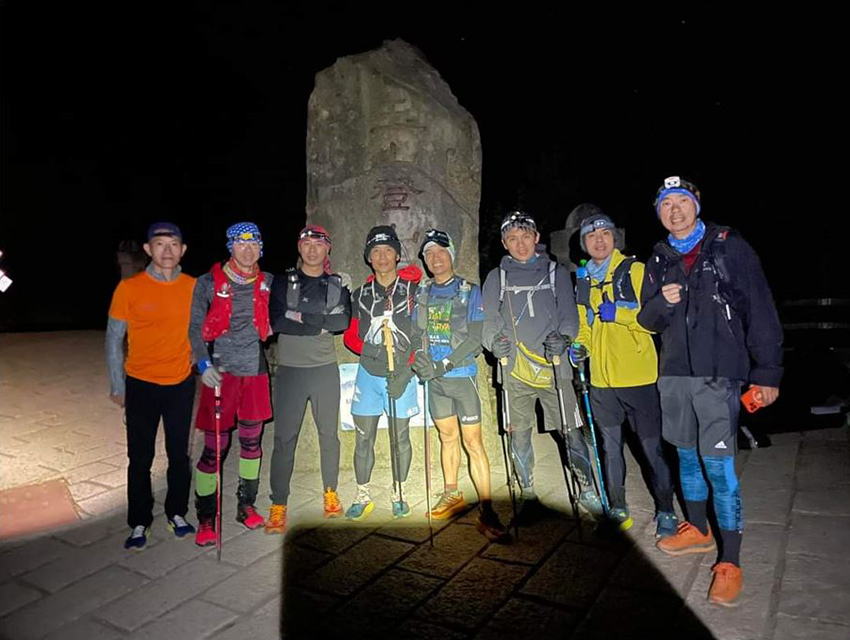 | ||
| 九座登頂證明 | ||
| 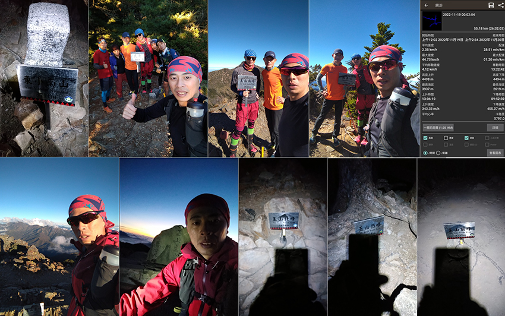 | ||